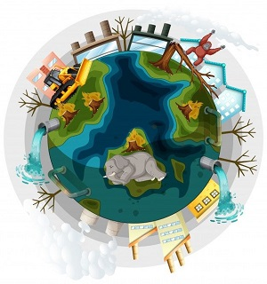
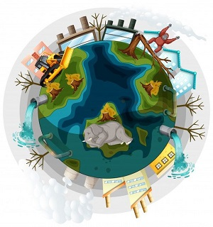
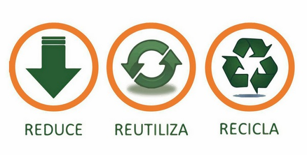
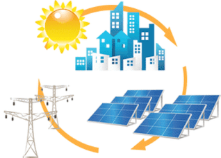

YAM
YAM es una empresa destina al cuidado de nuestro planeta tierra protegiéndolo de una amenaza letal la contaminación, el efecto invernadero, la sobre población entre otros desastres que han provocado los seres humanos. Nosotros tenemos el poder de salvar este planeta y convertilo en algo maravilloso para cada ser vivo y futuras generaciones para que tengan la posibilidad de prosperar, pero nuestras acciones son contradictoria para el progreso a un mañana para el planeta.
El planeta grita auxilio.

 

LA MISION DE YAM
YAM una empresa ambiental que tiene como mision generar energia sustentable e expandirla a todo el mundo, ademas enseñar de la caracterizacion y manejo de los residuos solidos.
Hablemos de sus 2 sus facciones:
1.Caracterizacion y manejo de los residuos solidos:
Los residuos sólidos cualquier objeto, material, sustancia o elemento sólido resultante del consumo o uso de un bien. Estos son un problema de gran impacto ambiental que destruye los recursos naturales al ser contaminado el aire, el agua, el suelo, la flora y la fauna alterando las condiciones de salud y el entorno donde se desarrolla la vida misma, por lo tanto, es importante desarrollar medidas que permitan la reducción, reutilización y reciclaje de estos residuos.

2.Genrador de energia:
YAM genera enragia a base de recursos renovable en nuestro caso se usa el sol como suministro de energia. De esta forma nuestro planeta no sufre un gran impacto contaminador por medio de la energia que utilizamos dia a dia.
Este prcedimiento se le puede denominar tambien como energia sostenible.
Energia renovable vs energia irrenobable.
Las energías renobables son fuentes de energía limpias, inagotables y crecientemente competitivas. Se diferencian de los combustibles fósiles principalmente en su diversidad, abundancia y potencial de aprovechamiento en cualquier parte del planeta, pero sobre todo que no producen gases de efecto invernadero –causantes del cambio climático- ni emisiones contaminantes. Además, sus costes evolucionan a la baja de forma sostenida, mientras que la tendencia general de costes de los combustibles fósiles es la opuesta, al margen de su volatilidad coyuntural.
Las energías no renovables o energías convencionales son aquellas fuentes de energía que se encuentran en la naturaleza en cantidades limitadas, las cuales, una vez consumidas en su totalidad, no pueden sustituirse. Las energías no renovables no liberan solamente gases de efecto invernadero, sino también gases y partículas contaminantes a la atmósfera.
